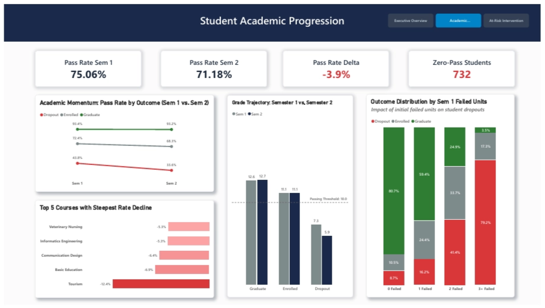
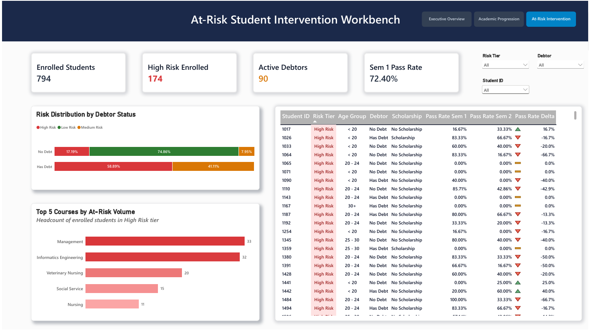

Student Retention & Early Intervention
Analytics System
An end-to-end data pipeline, dimensional data warehouse, and proactive decision-support system designed to identify and rescue at-risk undergraduate cohorts before critical academic census dates.

1. The Problem & Business Challenge
Higher education institutions face substantial tuition revenue loss and diminished student outcomes when attrition goes undetected. Traditional institutional reporting operates retroactively - evaluating dropouts only after exit interviews or end-of-year audits. The institution faced an overall graduation rate of 49.93% counterbalanced by a steep 32.12% dropout rate across 4,424 student records. The objective was to replace lagging indicators with an automated, proactive early-warning analytics engine capable of surfacing individual risk factors before census cutoff dates.
2. System Architecture & Dimensional Modeling
To support high-performance analytical slicing and clean business reporting, raw student demographic and historical academic records were processed through an automated Python pipeline into a relational SQLite database structured as a Star Schema:
- Fact Table (
fact_student_semester): Captures longitudinal semester-level performance, tracking enrolled credits, evaluations, approved units, grades, and semester velocity. - Dimension Tables:
dim_student: Stores cleaned student attributes, financial assistance indicators (scholarships, tuition debt status), demographic profiles, and enrollment outcomes.dim_course: Maps course identifiers and program names.
This dimensional separation decoupled student profile changes from recurring academic measurements, optimizing memory footprint and query execution across Power BI’s engine.
3. Diagnostic Insights & The Tipping Point
Through exploratory SQL CTE auditing and correlation analysis, three critical operational insights emerged:
- The First-Semester Cliff: Freshmen academic performance in their very first semester is overwhelmingly predictive of institutional outcome. Students completing 100% of Semester 1 units achieve an 80.7% graduation rate. However, failing just 1 unit doubles the dropout rate to 16.2%, failing 2 units spikes attrition to 41.4%, and failing 3+ units pushes attrition to 79.2%.
- The Financial Penalty: Students with outstanding tuition debt experience a 62.0% dropout rate (compared to 28.3% for debt-free peers). In contrast, scholarship recipients graduate at a 76.0% rate, identifying micro-grants as the single highest-ROI retention intervention.
- Curricular Specialization Friction: Cohort velocity tracking revealed that the Tourism curriculum incurred a -12.4% pass-rate plunge transitioning from Semester 1 to Semester 2, followed by Basic Education (-6.9%) and Informatics Engineering (-5.3%), pinpointing systemic curriculum gating issues.
4. Decision-Support Solution (Power BI)
The analytics solution was delivered as an interactive 3-tier reporting architecture designed for distinct operational personas:
- Page 1: Executive Cohort Overview: Provides institutional leadership with strategic KPI tracking, demographic outcome distributions, and cross-course attrition benchmarking.
- Page 2: Academic Progression Diagnostic: Enables department chairs to drill into course-by-course transition drops and monitor curriculum friction points.
- Page 3: At-Risk Intervention Workbench: Equips frontline academic advisors with actionable student-level triage. Powered by dynamic multi-criteria DAX measures, it immediately isolates 174 High-Risk currently enrolled students and 90 active tuition debtors for 1-on-1 counseling.


5. Strategic Recommendations & Source Artifacts
Based on these findings, the system recommended implementing automated early alerts triggered immediately upon Semester 1 grade publishing for any student failing ≥ 2 units, alongside proactive debt restructuring counseling prior to Semester 2 enrollment lock.